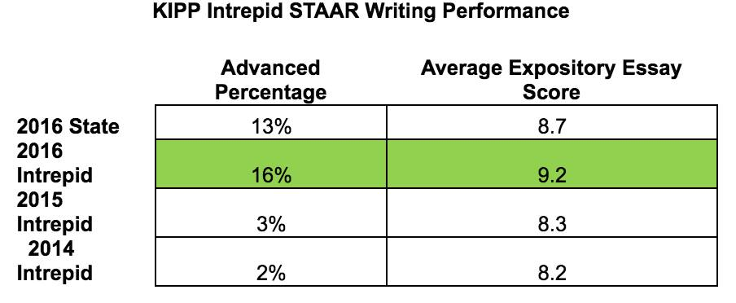

Michelle the Scientist
Research experiences listed on this page include:
- Galapagos Study Abroad Research Experience
- WISE Program Evaluation
Galapagos Study Abroad Research Experience
In summer 2016, I studied abroad on a faculty-led trip the Galapagos Islands. The study abroad trip was unique in its inclusion of a research component. We worked with professors and graduate students at the University of San Francisco in Quito (USFQ) on three different research projects.
Research topics
The first research project involved the cataloging of the sea lion population and monitoring sea lion and dog interactions in order to determine if there is a viable risk of transmittable diseases between the two species. The second research project involved measuring the density of the sea urchin population in order to determine if the sea urchin population was expanding at the expense of the sea turtle population. The third research project involved cataloging individual sea turtle sightings in order to determine each sea turtle’s preferred habitat.
Research results
Unfortunately three weeks was not an adequate amount of time to reach a conclusion. However, the data we collected correlated with the data the USFQ collected previously. We determined that the there is a viable risk of diseases transmitted between sea lions and canines. This data will eventually be used to support policy that will increase measures against free-roaming dogs. We also determined that the sea urchin population is expanding as a result of El Nino but is not at the expense of the sea turtle population. This situation will be further monitored although there is no plan of action. In addition, our recordings of sea turtle sightings matched with previous data, indicating that the same turtles were frequenting the same geographic locations. This data will be used to garner reservation areas where more sea turtles frequent.

WISE Program Evaluation
Find out more about the Writing to Inspire Successful Education (WISE) Program here.
About the service program
The Writing to Inspire Successful Education (WISE) program evaluation is intended to analyze the impact of the iWISE program at KIPP Intrepid on each of the 108 seventh graders who participated in the program and the group as a whole. iWISE is a mentoring and writing tutoring program for seventh graders at KIPP Intrepid Preparatory School with the help of the University of Houston Bonner Leaders Program. The iWISE program emerged from conversations between the Bonner Leaders Program directors and KIPP Intrepid teachers and administrators on strategies to address deficiency in writing skills for seventh grade students, who take a state-mandated writing end of course exam. Through collaborative efforts, a writing mentorship program was launched in 2015 that matched thirty Bonner students with 108 seventh graders. iWISE aims to improve students’ writing proficiency, increase their confidence in written self-expression, and heighten their awareness of college planning and achievement. In order to reach its goals, iWISE provided students with support in the form of bi-weekly individualized feedback videos, intensive in-person tutoring opportunities, and monthly recreational activities to establish a relationship with their mentors.
Program outcomes
An immediate goal of iWISE was to raise writing test scores on the State of Texas Assessments of Academic Readiness (STAAR) test. In fall 2015, the STAAR benchmark test found a 40% passing rate with a 6% commended rate. After the implementation of the iWISE program, the scores on the STAAR end of course exam increased to 54% passing and 15% commended on average.
Research question
The research will evaluate the iWISE program and its field of focus is multimodal writing tutoring for seventh graders by college students. In order to observe how iWISE individually impacted each of the 108 seventh graders at KIPP Intrepid Preparatory School, the research will compare how each student improved from their STAAR writing benchmark test score to their STAAR writing end of course exam score. In order to observe how iWISE impacted on test scores at KIPP Intrepid Preparatory School, the research will compare KIPP Intrepid’s average test scores from their STAAR writing benchmark test, STAAR writing end of course exam, and the MAP test to the average test scores of twenty different KIPP middle schools in the state of Texas. To make appropriate comparisons, the investigation will consider the demographics of each of the KIPP middle schools when comparing Intrepid’s average test scores to those of other KIPP schools. The research will also take into account all the STAAR writing benchmark test, STAAR writing end of course exam, and MAP test scores from each of the twenty KIPP middle schools in Texas from 2011 to 2016. All of this information must be requested from the KIPP Public Charter School System. This investigation will conclude in Spring 2017.